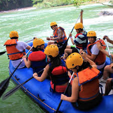
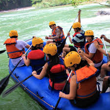

What is the plan? Rafting on the Green River!
 

Rio Claro Antioquia.
Rafting the Green River is to get to know a preserved, crystalline river with green tones in the water,
that crosses the jungle and virgin mountains of Eastern Antioquia.
We start this trip with a tour in 4×4 trucks to the forest area, where we will walk down the canyon through
amazing landscapes accompanied by mules that will carry our rafts.
We will paddle down the river for more than 25 km through the Verde River and the famous Samana River.
Get ready! We will live an adventure full of excitement and adrenaline where we will test our body and mind,
facing big waves, whirlpools and class 3 and 4 rapids.
During the tour we will also be able to swim and enjoy a crystal clear waterfall,
share with traditional gold miners and learn about the incredible diversity of endemic flora and fauna of this area.